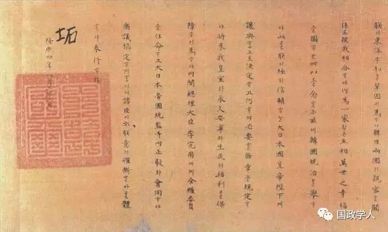
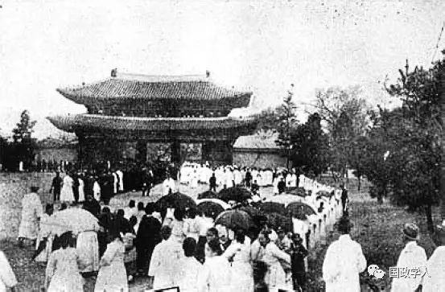
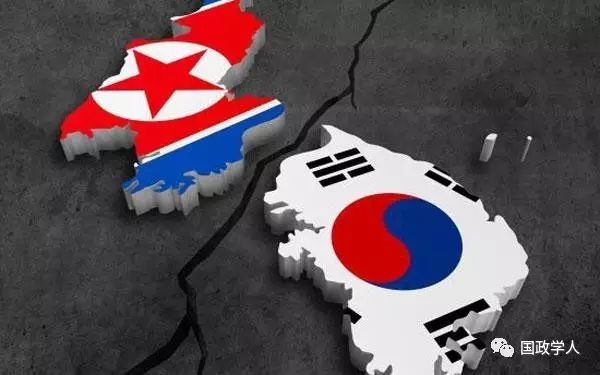
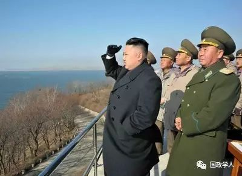

收录于合集

文章来源：《和平与发展》2017年第2期
作者系 中国国际问题研究所副研究员

“历史逻辑”这个词或许会关系到历史的演进是否具有内在或外在规律性的哲学话题。在现实的国际政治中使用这个词汇，原因在于从长期以来复杂的国际政治现象在演变为历史事实的过程中，我们认为，可以多变的政策选择实际上早已存在于由历史所规定的逻辑之中，政策选择往往基于历史逻辑已确定的选项进行。而政策的方向确定后，往往也就决定了结果。冷战后，关于朝鲜半岛局势的变化，人们一般将其归结为各方政策选择的结果，而忽视了其背后的历史逻辑，从而对局势的发展往往感到难以判断。2017 年2 月12 日，朝鲜宣布成功进行了新战略武器系统——“北极星－ 2”型地对地中远程战略弹道导弹试射。而此时，恰恰是靠“反建制派”支持上台的美国新任总统特朗普内阁未定、对外政策不明之际。尽管世人普遍关注特朗普政府将会如何应对朝鲜，但从历史逻辑的角度看，其可做的政策选项是有限的。而真正需要我们思考的是，朝鲜半岛局势是否到了某种逻辑演进走到尽头，而将要发生历史性变化的时候。
一、民族国家重建是半岛的基本历史逻辑
（一）日本吞并朝鲜是当今半岛问题的历史逻辑起点
历史逻辑的起点通常存在于时代性的变化之中。对于朝鲜半岛来说，其现实所有问题的历史逻辑起点都可归结于西方列强以武力迫使东亚国家从古代社会向现代社会的转变过程中，朝鲜民族遭遇了亡国之痛。1910 年8 月22 日，日本伊藤博文政府迫使朝鲜政府签订《日韩合并条约》，标志着日本正式吞并朝鲜，朝鲜彻底沦为日本的殖民地。

这个起点意味着朝鲜半岛内部结构的破碎，民族命运的走向将取决于外部环境的变化和内部结构的重建。从国际环境来看，日本是19 世纪东亚唯一进入工业化社会的帝国主义国家，因此相对于东亚国家具有较为明显的军事优势。但当时东亚早已是西方老牌帝国主义的竞争之地，日本必将面临着竞争。与此同时，一个更重要的问题是，西方列强所征服占领并实行殖民统治的地区基本上都是文明程度较低的地区。而朝鲜和日本虽然与中国略有不同，但也都属于中华文明的大体系，是有着几千年历史的成熟文明体系。日本作为体系内的文化，并不具有文明的优势。所以，日本对朝鲜的统治就面临着基本的逻辑困境，即面对朝鲜背后体积庞大的中国，尽管当时看似摇摇欲坠，但仍使日本看不到可以永久统治朝鲜的前途，除非日本可以统治中国。日本唯一的希望是朝鲜民族作为与自己文化同系的族群，接受日本的同化政策。但是帝国主义对于被征服的“异族”，一定是采取灭绝或奴役的政策。这从古罗马到欧洲所谓“地理大发现”之后的扩张都是如此。否则征服者本身将会在这一过程中被消耗殆尽。而且帝国的扩张往往都是通过奴役被征服者来实现滚雪球式的壮大，直到像罗马帝国那样的崩溃出现，或者现代的美利坚合众国从大英帝国独立。但是日本在同化朝鲜的问题上暴露了自己的文化异类性。尽管日本人从唐朝开始向中国学习，并且以汉字为自己文字的主体，可是儒家文化和佛教精神在日本都流于表面，反而是近代西方的社会达尔文主义与日本独特的武士文化融合得浑然一体。日本在征服朝鲜半岛时，呈现出的是野蛮对文明的征服。1895 年，日本先是攻入朝鲜王宫，杀害了被视为侵略朝鲜半岛政治障碍的闵妃，而后颁布了“断发易服令”，试图从精神上同化朝鲜民族。朝鲜民族认为发髻是儒教“孝”的象征，传统服装是儒教礼俗，因此对日本人的行径奋起反抗。
朝鲜人民对日本的反抗是一种必然的历史逻辑。日本吞并朝鲜后，搞“武断政治”，实行宪兵、警察统治；大肆进行经济掠夺，使大部分农民失去自己的土地沦为佃农；扼杀民族资本的形成与发展；强制施行奴化教育，禁止朝鲜人学习和使用自己的民族语言，不准讲授朝鲜的历史和地理。这种压迫自然会激起民怨，而当作为民族独立象征的朝鲜皇帝李熙突然死亡，且被认为是殖民者下毒所致[1]， 怨恨情绪的爆发也就成为必然。
（二）朝鲜的复国独立需要外部支持成为一种基本逻辑
在人类历史上，国家被吞并而不得复生的现象并不少见。即便是近代的日本，其吞并朝鲜并非初犯。此前，日本用了近300 年的时间，通过权力蚕剥的手段削弱琉球王国，并最终于1879 年4 月正式改琉球为冲绳县，完成吞并。虽然二战结束时，美、英、中促令日本投降的《波茨坦公告》申明：“日本之主权必将限于本州、北海道、九州、四国及吾人所决定其他小岛之内”，即琉球不属于日本领土，且美日媾和的《旧金山条约》规定，琉球由美国代联合国进行托管。但现在琉球显然是日本的管地，事实上的美日共占殖民地。琉球命运之所以悲惨：一是因为其自身过于弱小；二是因为其孤漂大海，紧邻日本；三是时代因素使然。对于朝鲜来说，国际环境对其摆脱日本殖民统治构成有力支撑，这是一种历史大逻辑所决定的。1919 年3 月1 日，朝鲜爆发全民性的反日独立运动，史称“三一运动”。该运动爆发有着深刻的时代背景，即“反帝、反殖”、“尊重民族独立”的力量开始茁壮成长，帝国主义开始走上末路。第一次世界大战导致了反对帝国主义战争的俄国十月革命爆发，带动了世界范围内反对帝国主义运动的兴起。即便是同为帝国主义国家，时任美国总统威尔逊意识到，帝国主义靠领土扩张来发展的时代已经结束。因此，他为解决战后问题提出的“十四点计划”中包含了“民族自决”的主张。这些都对东亚受压迫人民产生了较大影响。一向作为朝鲜半岛战略依托的中国，以新思想为基础的反帝斗争也开始蓬勃生长。就在朝鲜“三一运动”后不久，中国就爆发了“五四运动”。这些就是历史的大逻辑。有了这个大逻辑，朝鲜半岛就不会重蹈琉球王国的覆辙。

但在这种大逻辑中，朝鲜民族自身的小逻辑对其命运的影响更直接。在东亚历史因外力冲击被迫从古代向现代转变的时期，朝鲜也吸收西学，并与中国的“中体西用”和日本的“和魂洋才”相类似地，提出了“东道西器”的思想；中国通过辛亥革命实现国家体制转变的思想和做法也对朝鲜产生了一定的影响。但在列强竞逐的时代，朝鲜起步太晚，国力太弱，尤其是日俄战争的冲击和日本的侵略，使得朝鲜半岛内部的社会及政治权力体系七零八落。这种社会的破碎在“三一运动”中表现得较为充分。运动从发起到发展，领导层始终与普通民众严重脱离，实际上是民众将少数知识阶层的请愿活动变成了一次民族抗争。这种社会破碎使得朝鲜人民一直难以找到领导民族自救的核心力量。 “三一运动”被日本殖民者镇压后，朝鲜国内外冒出了至少5 个“民国临时政府”。这种局面说明了朝鲜内部抗争力量的分散性。尽管1919 年4月10 日在中国上海成立的“大韩民国临时政府”具有较大的代表性，但由于其内部派系纷争，实际工作又脱离人民群众，因此难以扮演真正的领导者角色。而他们自己也将恢复国家独立的希望寄托在美国身上，实际发挥的作用非常有限。朝鲜半岛针对日本征服者的武装斗争主要分散在中国东北和苏联东部，受中共和苏共的影响较大；而“临时政府”则躲在远离半岛的中国南方城市，维系着名义上的国家政治权力。这种局面也为日后半岛内部的政治分裂埋下了祸根。简而言之，作为一个弱小国家，朝鲜的复国需要外部环境支持，但其内部缺少凝聚民族的核心力量，也加剧了朝鲜在争取独立的斗争中的对外依赖程度。这种状况构成了战后半岛历史演进的重要逻辑因素。
（三）大国政治的逻辑使战后复国建政演变为分裂冲突
朝鲜半岛的复国是在大国主导下进行的。1943 年中美英三国发表的《开罗宣言》指出：“我三大盟国稔知朝鲜人民所受之奴隶待遇，决定在相当时期使朝鲜自由独立。”文字间自然地透露着半岛复国的对外依附性，这就决定了半岛的战后重建过程更容易受外部因素的支配。二战结束后不久，世界就再次陷入分裂。这次分裂的历史逻辑存在于资本主义条件下工业文明的发展过程中。出于对利益的追求，资本一方面要在横向面上打破国界的制约，以寻求不断优化产业链布局，获取更高的利润；另一方面又通过人与资本的关系，在纵向面上将社会中的人分为利益对立的阶级。这两种动力并行的结果就是殖民主义的对外侵略和奴役。战后的世界虽然建立了联合国，但帝国主义和殖民主义并未自动退出历史舞台，所以在现实中是按照民族主义反对帝国主义和殖民主义、共产主义反对资本主义的逻辑构建国际社会体系。而传统的战争逻辑——战后大国要重新瓜分世界——则被时代性的大逻辑所掩盖。

不幸的是，朝鲜半岛由于其地缘政治地位，而被美苏两个大国分割了。两个大国之间以意识形态斗争为核心的冷战也就此蔓延到了朝鲜半岛。半岛的复国建政也就直接和意识形态的选择联系到了一起，选择哪种制度就意味着站在了哪个大国一边。显然，美苏两个大国都不会接受在朝鲜半岛建立对方的社会制度，分裂是一种必然的选项。当然，关键的问题还是当时半岛内部各政治派别之间相互敌对的状态，以及斗争的血腥，使他们将民族统一复兴问题让位给意识形态的争论，这就为外部势力操控提供了运作空间。
对于南北双方来说，原本为了复国，却因此导致国家分裂。这近乎荒唐的结果是他们难以接受的。所以，尖锐的政治对立和强烈的统一愿望，这个精神矛盾体就一直在半岛存在，主宰着局势的走向。从历史逻辑来看，朝鲜战争的爆发几乎是必然的。首先，分裂的南北双方均认为自己代表整个半岛，不承认对方的合法性，因此消灭对方是一种自然的逻辑。其次，制造分裂的两个大国并没有为维护半岛分裂局面、避免冲突，建立起任何有效且各方承认的机制，因为他们也认为分裂是不合法的。在这种情况下，半岛南北双方均需要通过某种行动来确认是实现统一，还是接受分裂。而行动也只有两个逻辑选项：一是在力量均衡的情况下接受分裂的现实，而后谋动；二是在出现力量失衡的情况下，冒险尝试实现自己的目标。很不幸，半岛出现了第二种情况。不过，朝鲜战争的结局证明了当时半岛力量失衡的状态是种假象。许多人被其所蒙蔽，是因为缺少全局观和对历史大逻辑的认识。朝鲜当时对美国的误判，和美国对中国的误判是一个道理——既然半岛站在哪个大国一边已经不是半岛自己的事情，那么半岛内的冲突就只能从全球冲突的角度去看。战争是否可以避免，这在很大程度上是个哲学问题。因为几乎所有的战争都是历史的一种近乎必然的进程，我们只能从中去认识历史的逻辑，而无法对已经发生的历史进行假设。朝鲜战争带来的最大问题是它使半岛的局势进入了战争而非和平的轨道：虽然最终签署了停战协定，但迄今仍无有效的终战协议，南北双方以及美朝之间依然处于严重的对立状态，半岛尚未脱离战争轨道。这就是半岛目前复杂局势最核心的内在逻辑。
尽管1991 年朝韩同时加入了联合国，在国际法上成为两个独立的主权国家，双方签署了《南北互不侵犯协定》，但双方从内心里都不承认这种法律上的主权独立。所以，李明博上台后可以随意废除金大中、卢武铉与金正日达成的协议，朝鲜则彻底废除1991 年的协议，这些都是在心理上还未脱离战争逻辑的表现。而朴槿惠上台后，更是在国际上四处宣扬要用德国方式实现半岛统一，这在国际法上疑似公然宣布要吞并另一个国家。
二、美国的基本战略是半岛困境的逻辑根源
（一）冷战的内在逻辑依然未摆脱旧世界的权力竞争套路
二战后，世界历史进入到一个崭新的阶段。对此，美、英、中在《波茨坦公告》中将其描绘为“和平安全及正义之新秩序”。对美国当时的历史作用，我们应给予客观的评价。战后，美国主导下建立的联合国、世界银行、国际货币基金组织、关税贸易总协定（如今的世界贸易组织），应该被视为这种新秩序的重要标志。尽管这些机构长期被美国操控，经常被认为是美国的“私器”，但由于理论上它们是顶着“公器”的名号，实践上是以“公益”为目标，所以逻辑上这些机构要么走上名实相符的道路，要么就走向消亡。总体而言，从社会实践的角度看，战后秩序还处于探索阶段。对于这一阶段世界历史演进的内在逻辑，人们的认识依然不足。单纯就世界和平问题而言，人们对二战这种残酷的世界级战争的根源有着不同的认识：西方国家的政治家和理论家至少在表面上认为专制制度是战争的根源，因此应大力推广自由民主制度，他们指责共产党国家是专制制度；而社会主义国家则认为战争的根源是资本主义制度，所以要实行公有制经济。但公有制和私有制在理论上的尖锐对立造成了世界的分裂。所以，美国打造的“新秩序”机构，除了联合国之外，对社会主义国家是没有意义的。中国提出“和平共处五项原则”，旨在寻求不同社会制度的国家之间发展关系的路径。这个理论的重要历史意义在于，它揭示了战后新秩序所应该具有的核心内涵。
然而，纵观整个战后和冷战史，我们发现在所谓“意识形态斗争”的掩盖下，指导美国外交政策的核心理论依然是战前就开始盛行于西方，并且也曾对第三帝国具有影响的地缘政治学说和现实主义理论[2]。 正是这些理论可以解释为什么当苏联红军进入朝鲜半岛时，美国立即画出“三八线”，将半岛一分为二，并将南部纳入自己掌控之中。而恰恰是这一举动成了美国在半岛政策的逻辑起点，以及日后美国要在亚太地区确保军队前沿部署战略的开端，而该战略又是美国霸权战略的核心组件。
（二）冷战后美国的霸权战略蕴含深刻的历史性逻辑冲突
冷战结束是人类发展史中非常重大的一个事件，是历史逻辑演进的一个重要节点，世界从此进入一个崭新的经济全球化阶段。但经济全球化的本质是要求世界各国之间的关系以和平合作、共同发展为基本形态。因为只要政治和安全上处于对抗形态，经济关系就可能成为对抗的武器，以自由贸易为基础的全球化就无法展开。所以冷战后的时代要求政治和文化上的相互包容。
但是，美国将冷战结束视为自己冷战战略的胜利，因此在国家战略上不是顺应时代进行调整，而是变本加厉地将二战后形成的美国在西方世界的领导者身份自我提拔为世界的“领导者”，或者更准确点说，美国企图将其对西方和盟国的领导打造成美国统治世界的政治架构。为推行这种霸权谋略，美国采取了相应的政治军事手段。在军事上，美国与历史潮流背道而驰，在苏联解体、华沙条约组织解散，世界上已无军事安全对手的情况下，美国却在欧洲强化并扩大北约组织，在亚洲提出“轴辐战略”，强化“美澳新条约”和美日、美韩军事同盟，并且要将美日和美韩同盟从双边防御性条约改造成全球军事干预的工具。在政治上，美国创造了所谓的“普世价值论”，试图通过对他国社会制度和思想意识文化的改造，来实现为其霸权体系服务的政治全球化。美国的政治和军事战略是相互促进的。借助军事同盟体系的扩张，美国以战争为手段，以“人权高于主权”为借口，用强权主义方式在中东、北非、东南欧等原来冷战对峙边缘地区推广“民主”。
西方政界、学界和舆论界不仅积极拥戴美国的新领导地位，而且在理论和实践上积极配合，并参与对他国的武力干涉，有时甚至乐于充当急先锋。因为在美国的霸权架构中，他们可以居于世界的高端，因此将现实世界的“美国主导”定义为一种“国际秩序”形态。在西方关于“美国治下的和平”舆论烘托下，美国公然将确保自身的霸权地位不受挑战作为核心战略。从克林顿的“不允许出现挑战美国地位的国家或集团”，到奥巴马的“确保美国的领导地位”，都是基于这种霸权思维逻辑。这种逻辑给世界历史带来的影响，就是和平已不再是世界历史的潮流，而是每个国家自己是否有能力掌握的事情。凡是被美国列入现实或潜在“改造目标”的国家，政府的任何操作不慎，都可能使国家陷入动乱或战争泥潭。而这所有的历史逻辑演进都对东亚地区尤其是朝鲜半岛局势的演进，产生了深刻的影响。
（三）冷战后朝鲜半岛的历史逻辑冲突
冷战后，受中国改革开放战略的影响，东亚地区整体呈现出和平合作、共谋发展的局面。朝鲜半岛也因此开始了南北和解进程，朝韩不仅签署了《南北互不侵犯协定》，还签署了《朝鲜半岛无核化宣言》，半岛一切重大问题都开始纳入对话合作解决的轨道。韩国方面提出“北方政策”，寻求与中国和俄罗斯的和解，东亚国家开始推动朝鲜半岛冷战的终结。这是一个半岛走向无核、和平、发展的历史新阶段的逻辑起点。

但是，这个逻辑起点被美国中止了。美国以核问题为借口，掌控了半岛冷战后局势走向的主导权。美国的对朝鲜政策极为复杂，简单地说，冷战后美国战略的几乎所有目标组成中都包含了朝鲜，特别是克林顿提出的“扩民主、反扩散、保人权”的三个战略目标，都明确包括朝鲜。要理解美国对朝鲜采取的政策，我们需要从大战略的角度进行观察。美国要确保霸权地位，就需要确保在亚太地区的前沿军事部署，而且出于未来战争的需要，美国还要在东亚地区部署导弹防御体系。然而，面对冷战后东亚地区的和平主义趋势，美国要维系军事存在，就必须找到现实威胁。1991 年受菲律宾民族主义冲击，美国被迫从菲律宾军事基地撤走。此后，美国就一直在南海问题上不断制造“中国威胁论”，直到奥巴马时期实现了军事重返菲律宾之后，美国又开始玩弄所谓“法制”。同样，在朝鲜半岛，冷战后的朝韩和解并不符合美国的战略需要。因为和解的结局很可能使美军不得不从半岛撤离。因此，美国对朝鲜的政策就不可能以美朝和解为逻辑目标或手段。
既然如此，美国在朝鲜半岛无核化问题上就陷入逻辑困境，美国从维护霸权为中心的战略出发来解决朝鲜的核问题，其效果必然适得其反。朝鲜发展核武器的逻辑出发点是维护本国安全：这种安全问题首先来自于美朝依然处于战争状态；其次，美国并没有放弃对朝鲜的敌对政策；第三，冷战时期美国在韩国部署了核武器，仅仅是为了要求朝鲜放弃核武器，美国才将核武器撤出韩国；第四，美国公开宣布朝鲜是美国的核打击目标，并且其核政策是保持先发制人进行核打击的权力；第五，冷战后美韩规模越来越大的联合军演对朝鲜构成现实的威胁。
按照正常逻辑，美国应该是以解除朝鲜的安全忧虑来换取朝鲜弃核，而且实现这一目标的办法很简单，只需美朝将“停战协定”改为“和平协定”，并逐步建立正常的外交关系。但恰恰在这个问题上，美国从来都是“王顾左右而言他”。美国对朝核问题的基本态度就是在不解决美朝敌对状态的情况下，要求朝鲜单方面弃核，甚至要剥夺朝鲜和平利用核能的权利。这种做法在本质上就是继续战争逻辑，在政治战场上要敌人缴械投降。那么，它的逻辑后果只能是对手投降或进行更强硬的反抗。而如今，我们看到的就是朝鲜强硬反抗所产生的效应，即朝鲜核武器和导弹技术的不断发展成熟。
（四）对朝核问题现象和美政策真实目的的逻辑解读和验证
朝核问题的解决可谓三起三落，许多人用简单的所谓“朝鲜欺骗”的指责语言来解读，是不合乎事实和逻辑的。从历史逻辑的角度看，在一个和平的历史潮流下，美国用反和平的强权方式来解决问题，导致逻辑对撞，因而造成问题的起起伏伏：问题解决出现曙光，往往是因为朝鲜对和平趋向抱有希望；问题解决走向失败，则多是因为美国让这种希望破灭。
1991 年，朝韩签署《朝鲜半岛无核化宣言》是基于南北和解的大局，但是这个进程被美国打断。因为该宣言意味着半岛无核化进程由朝韩主导，朝韩对等核查可能会包括核查美军基地，这是美国绝不能接受的。所以，美国通过强行夺取主导权，并将无核化谈判变成了美朝之间的谈判，将半岛无核化变成了朝鲜无核化。
1994 年，美朝签署《核框架协议》是因为美国无法证明朝鲜在发展核武器，而只能证明朝鲜的重水反应堆有发展核武的嫌疑或可能。于是美国为表明自己的“善意”，同意援助朝鲜一个轻水反应堆取代重水反应堆，以消除朝鲜发展核武的风险。但签约后美国迟迟不能履约，结果被朝鲜认为是在进行欺骗，于是用发射导弹的方式促美重回谈判桌。但该协议最终还是被小布什政府废除了。
2003 年，在中国的推动下，朝核问题谈判再起，并发展为六方会谈。六方会谈的构想是在东北亚建立一个多边安全机制，以确保地区稳定。在这种和平的前景下，2005 年六方会谈达成《9•19 共同声明》，朝鲜同意弃核。但在《声明》发表后，美国却以所谓“反洗钱”为名，立即宣布对朝鲜进行金融制裁。朝鲜几番要求对话解决未果，终于走上试导试核的道路。美国虽然被迫妥协，使朝核问题看似仍有挽回的机会。但韩国保守势力上台后，对朝采取强硬政策，李明博政府甚至加入联合国人权理事会关于朝鲜人权问题的提案国的队伍。这几乎是断绝了朝鲜通过朝韩关系改善来谋求安全的希望，极大地坚定了朝鲜发展核武的决心。这种决心在朝鲜新领导人上台后就立即明确地表达出来。

所以，朝核问题发展到现在这种地步完全是美国战略与历史发展潮流在逻辑上相撞的结果。但是，对于这种结果，奥巴马采取所谓“战略忍耐”，恰恰证明美国在朝核问题上的真正目标不在朝鲜，而有更大的企图。我们可以通过几件事情来验证这种观点。第一件事是美国在核不扩散问题上采取双重标准。首先我们必须客观地说，核不扩散机制有两重目标：一是核国家希望保持对核武器的垄断地位；二是要想实现无核世界，防止核武器扩散是第一步。所以，如果是为了实现第二个目标，那么对防扩散政策的执行就应该一视同仁。但是，对于暗中发展核武的以色列，美国采取了视而不见的态度。而印度不仅公开进行核试，并拥有核武器，还不断发展远程运载导弹，且没有加入《核不扩散条约》（NPT）。但美国不仅帮助其发展核能工业，而且积极推动“核供应国集团”（NSG）接纳印度为成员国。可见，美国对于核扩散的态度取决于其自身战略利益的需要，或者换句话说，美国在将原则工具化。第二件事是人权问题。美国声称，人权问题是美朝实现关系正常化的主要障碍。但从逻辑上讲，如果美朝关系实现正常化，不是更有利于改善朝鲜的人权状况吗？如果我们拿越南作为参照物，我们看到美国为了遏制中国的战略需要，不仅可以避开人权问题，而且可以违背其政权的基本意识形态原则，全面放开对越南的武器禁运。这又是从战略利益出发，将原则工具化的案例。
第三件事就是“萨德”反导系统问题。美国如今并不关注如何解决朝核问题，而是急于在韩国部署“萨德”反导系统。这里有两个逻辑悖论。首先，“萨德”主要用于反高轨导弹，而高轨通常是射程较远的导弹。此次朝鲜试射中远程导弹，为避免引起国际冲突，采取高轨方式发射，以便缩短导弹射程。反过来看，如果朝鲜以这种方式来进攻韩国，是不是有点太笨拙，且成本太高，效果不佳。其次，如果说部署“萨德”是为了保护韩国免受朝鲜的导弹攻击，但计划中的“萨德”其实连首尔都保护不了，又何谈保护韩国？“萨德”的要害在于X 波段雷达。将这种具有反洲际导弹预警作用的雷达部署到中国的家门口，恰恰是克林顿政府时期提出的在东亚部署全球导弹防御体系计划的一个组成部分。所以，“萨德”问题本身就证实，美国这些年在朝鲜半岛到底追求的是什么。如果我们将视野放宽，看看美国以伊朗的导弹为借口，在东欧，俄罗斯的家门口部署全球反导体系，我们就更能理解“萨德”的含义和美国对朝政策的实质。
总之，用历史逻辑分析法，抓住因果要素、历史节点和现象中的逻辑悖论，有助于我们看清历史演进的本质。朝核问题发展到如今的地步，恰恰是美国在冷战后推行确保霸权地位战略的结果。目前的半岛局势正在接近临界点。一旦朝鲜要用试导试核的方式来证明自己对美国有进行核打击的能力，可能会造成逼迫美国在妥协与战争之间进行选择的结果。这是一场赌局，无法预测后果。因此，为了避免这种极端局面的出现，我们必须使朝核问题重回和平解决的轨道。而要实现这个目标，美国必须顺应历史潮流，将自己的战略从维护霸权转向维护地区共同安全的轨道上来，而朝鲜也需要做出更大的改变。
注释：
1. 参见，曹中屏《朝鲜近代史1863-1919》，东方出版社1993 年版；李元淳《韩国史》，台湾1987 版。
2. 时永明：《美国的南海政策：目标与战略》，载《南洋问题研究》2015 年第1 期。
筛选：汪乐乐
编辑：里仝
**
**
**
**
您可能还会喜欢：
期刊分享 | 国际关系相关专业所有核心期刊免费获取（最新pdf版）
**
**